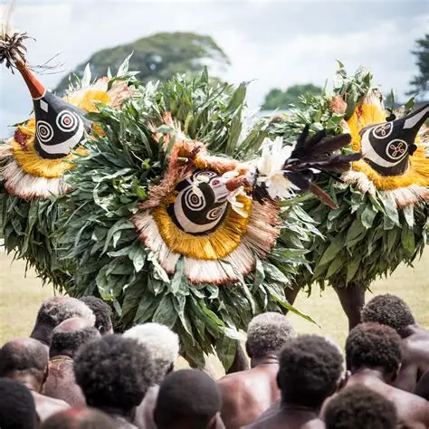
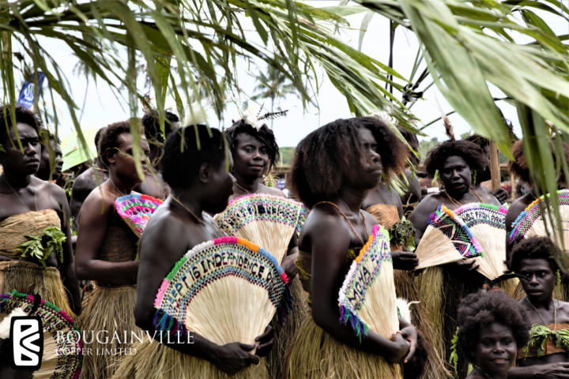
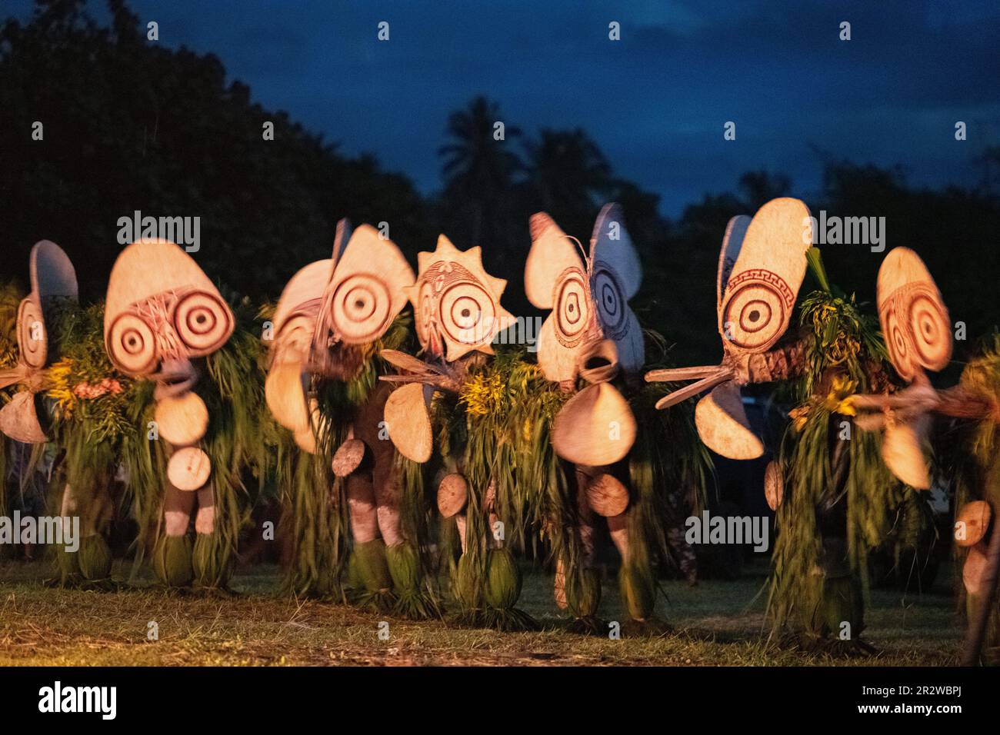

New Guinea Islands Region NGI Region - From the beautiful Chauka of Manus province to the keroscene colored waters of West New Britain province.   
Momase Region Momase Region - From the mighty Sepik River to the coastal villages of Morobe Province.
Southern Region Southern Region - From the Western Fly River to the vibrant coastal communities of Milne Bay Province.